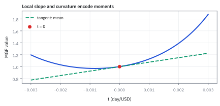
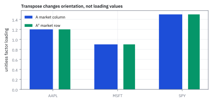
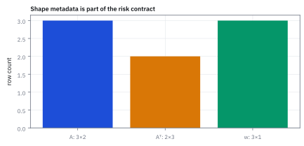

7.2 Transpose
สลับบทบาทของแถวและคอลัมน์ โดยไม่ทำข้อมูลหลุดจากชื่อของมัน
พอร์ตเดิมมี payoff สองสถานะเท่ากับ 50 และ 58 USD โปรแกรมจัดตารางจาก $2\times3$ เป็น $3\times2$ เพื่อเปลี่ยนทิศทางการคูณ ตัวเลขยังอยู่ครบและ shape ถูก แต่คำตอบกลับเป็น 70 และ 32 USD เกิดอะไรขึ้น?
ดูสาเหตุ แล้วค่อยสร้างตัวอย่างด้วยกัน
โปรแกรมอาจใช้ reshape แทน transpose การเรียงตัวเลขใหม่ให้ได้จำนวนแถวที่ต้องการ ไม่ได้รักษาความสัมพันธ์ระหว่างสินทรัพย์กับสถานะ ต้องตรวจว่าช่องแถว $i$ คอลัมน์ $j$ ย้ายไปแถว $j$ คอลัมน์ $i$ จริง ไม่ใช่ดู shape อย่างเดียว
บทนี้ใช้ matrices ของจำนวนจริง เราจะเริ่มจากการย้ายช่องหนึ่งช่อง แล้วใช้กติกาเดียวกันอธิบาย dot product, ลำดับผลคูณ และสูตรความเสี่ยงพอร์ต
1. Transpose ย้ายช่องอย่างไร?
นิยาม $A^{\mathsf T}$ โดยให้ $(A^{\mathsf T})_{ji}=A_{ij}$ ทุกช่อง ดังนั้น $A$ ขนาด $m\times n$ กลายเป็น $A^{\mathsf T}$ ขนาด $n\times m$ ตัวเลขไม่ได้เปลี่ยน แต่ชื่อแถวกับชื่อคอลัมน์ย้ายตามมันไป
ใช้ตาราง loadings สมมติชุดเดิมเพื่อฝึก แต่ในหน้านี้สินทรัพย์แถวที่สามเป็น SPY ตามรูป แทน JPM ในหัวข้อ 7.1 ตัวเลขไม่ใช่ผลประมาณ loadings ของ SPY จริง และไม่ควรนำไปสร้าง hedge โดยตรง:
เดิมช่อง SPY–Market คือ $A_{31}=1.5$ หลัง transpose ช่อง Market–SPY คือ $(A^{\mathsf T})_{13}=1.5$ ยังเป็น loading ของ SPY ต่อ Market เหมือนเดิม ไม่ได้กลายเป็น loading ของ Market ต่อ SPY



สำหรับ matrix จัตุรัส ลองนึกถึงการสะท้อนช่องข้ามแนวทแยง ไม่ใช่การหมุนกระดาษ 90 องศา การหมุนจะกลับลำดับของแกนหนึ่งด้วย ส่วน transpose ใช้กติกาสลับดัชนีข้างต้นเท่านั้น
2. กฎพื้นฐานตามมาจากการดูทีละช่อง
สลับแถวกับคอลัมน์สองครั้งต้องกลับช่องเดิม ส่วนการบวกและการคูณด้วย scalar ทำทีละช่อง จึงสลับก่อนหรือหลังได้ เมื่อ $A,B$ มีขนาดเดียวกัน:
ดังนั้น $(A^{\mathsf T})^{\mathsf T}=A$, $(A+B)^{\mathsf T}=A^{\mathsf T}+B^{\mathsf T}$ และ $(cA)^{\mathsf T}=cA^{\mathsf T}$ แต่ transpose ไม่ใช่ inverse โดยทั่วไป เช่น $D=\operatorname{diag}(2,3)$ มี $D^{\mathsf T}=D$ แต่ $D^{\mathsf T}D=\operatorname{diag}(4,9)$ ไม่ใช่ identity
Matrix ที่ $A^{\mathsf T}=A$ เรียกว่า symmetric ต้องเป็นจัตุรัสและมี $A_{ij}=A_{ji}$ ทุกคู่ ไม่ได้หมายความว่าทุกช่องมีค่าเท่ากัน หรือว่า matrix จัตุรัสทุกตัวจะ symmetric
3. ย้าย transpose ไปอีกที่ ก็เปลี่ยนคำถามได้
ให้ $\mathbf u=(1,-2,3)^{\mathsf T}$ และ $\mathbf v=(4,0.5,-1)^{\mathsf T}$ เป็น column vectors ถ้าต้องการจับคู่แล้วรวมเป็นเลขเดียว ต้องวาง row vector ไว้ทางซ้าย:
Inner product ใช้คู่ดัชนีเดียวกันแล้วบวก จึงได้ scalar ส่วน outer product เก็บผลคูณทุกคู่เป็นตาราง ถึง inner product เป็นศูนย์ outer product ก็ไม่จำเป็นต้องเป็น zero matrix
สำหรับจำนวนจริง $\mathbf u^{\mathsf T}\mathbf v=\sum_i u_i v_i=\sum_i v_i u_i=\mathbf v^{\mathsf T}\mathbf u$ แต่ outer products สองลำดับไม่จำเป็นต้องเท่ากัน หากทำงานกับจำนวนเชิงซ้อน inner product มาตรฐานต้องใช้ conjugate transpose ซึ่งต่างจาก transpose ที่เราศึกษาที่นี่

4. ทำไม transpose ของผลคูณต้องกลับลำดับ?
ให้ $P$ ขนาด $m\times n$ และ $Q$ ขนาด $n\times p$ ผลคูณ $PQ$ ขนาด $m\times p$ หลัง transpose จึงเป็น $p\times m$ ซึ่งเป็นขนาดของ $Q^{\mathsf T}P^{\mathsf T}$ การพิสูจน์ว่าค่าเท่ากันต้องดูทีละช่องด้วย:
บรรทัดกลางใช้ว่าตัวเลข $P_{jk}$ กับ $Q_{ki}$ คูณสลับกันได้ ไม่ได้สมมติว่า matrices คูณสลับกันได้ หากทั้งสองเป็นจัตุรัส ลำดับผิดอาจยังมี shape ถูก แต่ให้คำตอบผิด:
สำหรับสาม matrices ใช้กฎเดิมสองครั้ง: $(PQR)^{\mathsf T}=R^{\mathsf T}(PQ)^{\mathsf T}=R^{\mathsf T}Q^{\mathsf T}P^{\mathsf T}$ ไม่ใช่แค่เติมเครื่องหมาย transpose โดยคงลำดับเดิม
5. คลี่โจทย์เปิด: shape ถูก แต่เงินหายไปไหน?
สมมติสัญญาสามตัวจ่ายเงินสิ้นงวดตามสองสถานะดัง $S$ หน่วยของแต่ละช่องคือ USD ต่อหน่วยสัญญา ถือจำนวนหน่วย $\boldsymbol\theta=(2,6,4)^{\mathsf T}$ จึงมี payoff:
คำตอบเปลี่ยนจากคอลัมน์เป็นแถว แต่ payoff ของสถานะเดิมยังเป็นค่าเดิม ส่วน reshape ที่อ่านค่าทีละแถวแล้วจัดใหม่จะทำแบบนี้:
เงินไม่ได้หายจากพอร์ตจริง แต่โปรแกรมจับคู่จำนวนสัญญากับ payoff ผิดช่อง เหลือรูปตารางที่คูณกันได้แต่เล่าเรื่องคนละเรื่อง และ payoff สองสถานะนี้ยังไม่ใช่ expected profit เพราะยังไม่ให้โอกาสแต่ละสถานะหรือต้นทุนเริ่มต้น
ข้อควรระวัง: reshape กลับขนาดเดิมก็อาจคืนข้อมูลเดิมได้เหมือนกัน ดังนั้นการทดสอบ round-trip อย่างเดียวไม่พอ ต้องทดสอบชื่อแกนและ $(S^{\mathsf T})_{ji}=S_{ij}$ ทีละช่องด้วย
6. Covariance matrix ทำไม transpose แล้วเหมือนเดิม?
ให้ $\mathbf R$ เป็น vector ของ returns จำนวนจริงในงวดเดียวกัน มี finite second moments และ $\mu_i=E[R_i]$ จากนิยาม covariance:
สมมาตรเกิดจากการสลับลำดับคูณของตัวเลข ไม่ได้เกิดจากความเป็นอิสระหรือการที่สินทรัพย์มีความเสี่ยงเท่ากัน Covariance นอกแนวทแยงจึงอาจเป็นบวก ลบ หรือศูนย์ได้
หากตารางที่ประมาณมาไม่สมมาตร ให้ตรวจ labels, วันข้อมูล, วิธีคำนวณและการปัดก่อน เมื่อยืนยันแล้วว่าความต่างเป็นเพียง numerical noise จึงค่อยใช้ $(C+C^{\mathsf T})/2$ เพื่อให้สมมาตร การเฉลี่ยสองด้านไม่ซ่อมข้อมูลผิด และไม่รับประกันว่า matrix จะเป็น covariance ที่ใช้ได้
7. จาก covariance ไปสู่ variance หนึ่งค่า
ให้ $R_p=\mathbf w^{\mathsf T}\mathbf R$ โดย weights เป็นค่าคงที่ การถ่วง returns งวดเดียวกันทำให้ความเบี่ยงเบนจากค่าเฉลี่ยของพอร์ตเป็นผลรวมถ่วงน้ำหนักเช่นกัน:
Weights อยู่สองข้างเพราะขยายกำลังสอง ไม่ใช่เพราะอยากเติม transpose ให้สูตรดูถูก shape หาก weights สุ่มหรือปรับระหว่างงวด ต้องนิยาม return ของกลยุทธ์ให้ตรงก่อน ไม่ควรใช้สูตร fixed-weight นี้โดยไม่ตรวจเงื่อนไข
ตัวอย่างสมมติให้ $\Sigma$ เป็น covariance ของ returns หนึ่งปีซึ่งวัดเป็นเศษส่วน และ $\mathbf w=(0.6,0.4)^{\mathsf T}$ เป็นน้ำหนัก ไม่ใช่จำนวนเงิน:
ตรวจด้วยสูตรสองสินทรัพย์ได้อีกทาง: $0.6^2(0.1)+2(0.6)(0.4)(-0.0559)+0.4^2(0.5)=0.036-0.026832+0.08=0.089168$ ถ้าเผลอทิ้ง covariance จะได้ 0.116 ซึ่งเป็นคนละโมเดล
แต่ละช่องของ $\Sigma\mathbf w$ คือ $\sum_j\operatorname{Cov}(R_i,R_j)w_j=\operatorname{Cov}(R_i,R_p)$ จึงไม่ใช่ volatility ของสินทรัพย์ และไม่ใช่ variance ของพอร์ตโดยลำพัง ต้องถ่วงด้วย $\mathbf w^{\mathsf T}$ อีกครั้งเพื่อรวมเป็น scalar
ถ้าเรียก marginal risk ต้องระบุว่าอะไรเปลี่ยน
กำหนด $V(\mathbf w)=\mathbf w^{\mathsf T}\Sigma\mathbf w$ และเปลี่ยนเฉพาะ weight ที่ $i$ ทีละ $h$ โดยตรึงตัวอื่น ใช้ความสมมาตรขยายได้:
จึงมีอัตราเปลี่ยน variance เป็นสองเท่าของช่องนั้นใน $\Sigma\mathbf w$ แต่หากการซื้อสินทรัพย์หนึ่งต้องขายอีกตัวเพื่อรักษางบลงทุน จะมีหลาย weights เปลี่ยนพร้อมกัน ห้ามอ่านตัวเลขนี้เป็นผลของ trade แบบนั้นโดยตรง
เป็น scalar และสมมาตร ก็ยังไม่พอจะเรียกว่า variance
Quadratic form เป็นคำเรียกนิพจน์ $\mathbf x^{\mathsf T}B\mathbf x$ เมื่อ $B$ จัตุรัส มันให้ scalar เพราะ $(1\times n)(n\times n)(n\times1)$ ลงท้ายที่ $1\times1$ แต่ $B$ ไม่จำเป็นต้องเป็น covariance:
เลข 16 ไม่ใช่ variance โดยอัตโนมัติ และ $B$ นี้ไม่ symmetric แม้เปลี่ยนเป็น symmetric part $(B+B^{\mathsf T})/2$ แล้ว quadratic form ยังได้ 16 เหมือนเดิม ก็ไม่ได้สร้างหลักฐานว่าตัวเลขมาจาก returns ชุดใด
Covariance ที่ถูกต้องต้องให้ variance ไม่ติดลบสำหรับทุก linear combination ด้วย ลอง matrix ที่ symmetric แต่ใช้ไม่ได้:
Variance ติดลบเป็นไปไม่ได้ Matrix นี้จึงไม่ใช่ covariance ที่ถูกต้อง คุณสมบัติให้ quadratic form ไม่ติดลบสำหรับทุก vector เรียกว่า positive semidefinite ซึ่งจะศึกษาใน 7.6
ตรวจเองใน 10 วินาที
ข้อ 1: หลัง transpose ตาราง loadings ช่องแถว Market คอลัมน์ SPY ต้องเป็นเท่าไร และเป็น loading ของใครต่อใคร?
ดูเฉลย
1.5 เป็น loading ของ SPY ต่อ Market ในตารางสมมติเดิม ไม่ใช่ความไวของ Market ต่อ SPY การเปลี่ยนทิศอ่านไม่กลับความหมายทางเศรษฐศาสตร์
ข้อ 2: ถ้า weights ในตัวอย่าง covariance เพิ่มสองเท่าทั้งคู่ variance และ SD เปลี่ยนอย่างไร?
ดูเฉลย
$(2w)^{\mathsf T}\Sigma(2w)=4w^{\mathsf T}\Sigma w$ จึงได้ variance 0.356672 และ SD ประมาณ 0.597220 หรือ 59.7220% เป็นกรณีเพิ่ม exposures โดยตรึงฐานที่ใช้วัด return ไม่ใช่แค่เปลี่ยนหน่วยของเงิน
ข้อ 3: Matrix จัตุรัส transpose แล้วไม่เปลี่ยนค่า แปลว่า inverse เท่ากับตัวเดิมหรือไม่?
ดูเฉลย
ไม่แปลว่าอย่างนั้น $D=\operatorname{diag}(2,3)$ เป็น symmetric แต่ inverse คือ $\operatorname{diag}(1/2,1/3)$ เพราะผลคูณจึงได้ identity การเป็น symmetric กับการที่ transpose เท่ากับ inverse เป็นคนละเงื่อนไข
JavaScript: ตรวจทีละช่อง ไม่ใช่แค่ตรวจ shape
โค้ดนี้แทน matrices ด้วย arrays ซ้อนสองชั้น เช่น column vector ใช้ [[1], [2], [3]] ส่วน [1, 2, 3] เป็น list ที่ยังไม่ได้ระบุทิศในสัญญาของฟังก์ชันนี้ จึงไม่รับเป็น matrix
function shape(A) {
if (!Array.isArray(A) || !A.length || !Array.isArray(A[0]) || !A[0].length) {
throw new TypeError('Need a nonempty rectangular matrix');
}
const n = A[0].length;
if ([...A].some(row => !Array.isArray(row) || row.length !== n || ![...row].every(Number.isFinite))) {
throw new TypeError('Need a finite rectangular matrix');
}
return [A.length, n];
}
function transpose(A) {
const [, n] = shape(A);
return Array.from({length: n}, (_, j) => A.map(row => row[j]));
}
function multiply(A, B) {
const [, n] = shape(A), [m] = shape(B);
if (n !== m) throw new RangeError('Matrix dimensions do not match');
const Bt = transpose(B);
return A.map(row => Bt.map(col => row.reduce((s, x, k) => s + x * col[k], 0)));
}
const column = xs => xs.map(x => [x]);
const A = [[1.2, .4], [.9, .2], [1.5, .7]], At = transpose(A);
const u = column([1, -2, 3]), v = column([4, .5, -1]);
const S = [[2, 3, 7], [1, 6, 5]], theta = column([2, 6, 4]);
const wrongReshape = [[2, 3], [7, 1], [6, 5]];
const P = [[1, 2], [0, 1]], Q = [[1, 0], [3, 1]];
const Sigma = [[.1, -.0559], [-.0559, .5]], w = column([.6, .4]);
const sigmaw = multiply(Sigma, w), variance = multiply(transpose(w), sigmaw)[0][0];
const B = [[2, 1], [0, 3]], x = column([1, 2]);
const symmetricPart = B.map((row, i) => row.map((b, j) => (b + B[j][i]) / 2));
const badCov = [[1, 2], [2, 1]], a = column([1, -1]);
console.log(JSON.stringify({
shapeA: shape(A), shapeAt: shape(At), At, twice: transpose(At), witness: At[0][2],
allCells: A.every((row, i) => row.every((value, j) => At[j][i] === value)),
inner: multiply(transpose(u), v), reversedInner: multiply(transpose(v), u), outer: multiply(u, transpose(v)),
payoffs: multiply(S, theta), rowPayoffs: multiply(transpose(theta), transpose(S)),
wrongPayoffs: multiply(transpose(theta), wrongReshape),
transposedProduct: transpose(multiply(P, Q)), reversedProduct: multiply(transpose(Q), transpose(P)),
wrongProduct: multiply(transpose(P), transpose(Q)), sigmaw, variance, sd: Math.sqrt(variance),
noCovVariance: .6 ** 2 * .1 + .4 ** 2 * .5,
doubledVariance: multiply(transpose(column([1.2, .8])), multiply(Sigma, column([1.2, .8])))[0][0],
Bx: multiply(B, x), quadratic: multiply(transpose(x), multiply(B, x))[0][0],
symmetricQuadratic: multiply(transpose(x), multiply(symmetricPart, x))[0][0],
invalidVariance: multiply(transpose(a), multiply(badCov, a))[0][0]
}));ศัพท์และสิ่งที่อย่าสับสน
- Transpose
- สลับดัชนีแถวและคอลัมน์ของข้อมูล โดยชื่อแกนต้องย้ายตาม
- Reshape
- จัดรูป array ใหม่ตามลำดับที่กำหนด ไม่ใช่การสลับดัชนีตามนิยาม transpose
- Symmetric
- Matrix จัตุรัสที่เท่ากับ transpose ของตัวเอง ไม่ได้แปลว่าเป็น inverse ของตัวเอง
- Quadratic form
- นิพจน์ $x^{\mathsf T}Bx$ ที่ให้ scalar สำหรับ square matrix B; จะเป็น variance ต้องมีเงื่อนไขเพิ่มเติม
ที่มาสั้น ๆ
งานพีชคณิต matrix ของ Cayley ในศตวรรษที่ 19 ทำให้การจัดรูปผลรวมและ quadratic forms มีภาษากระชับ ต่อมาแนวคิด mean–variance ของ Markowitz ในปี 1952 ทำให้ covariance เป็นแกนกลางของการเลือกพอร์ต แต่ variance คำนวณด้วยผลรวมสองชั้นได้อยู่แล้ว Transpose ช่วยเขียนและตรวจโครงสร้าง ไม่ได้สร้างความเสี่ยงขึ้นจากสัญกรณ์
ก่อนส่งตารางต่อให้ระบบอื่น
- ตรวจชื่อแกนและค่าทีละช่อง: $(A^{\mathsf T})_{ji}=A_{ij}$; shape และ round-trip อย่างเดียวไม่พอ
- Transpose ของผลคูณต้องกลับลำดับ แม้ลำดับผิดยังคูณกันได้
- Inner product เป็น scalar แต่ outer product เป็น matrix; วาง transpose คนละที่คือถามคนละคำถาม
- Covariance ต้อง symmetric และให้ variance ไม่ติดลบ ไม่ใช่ทุก quadratic form จะเป็นความเสี่ยง
เมื่อรู้ว่าตัวเลขแต่ละช่องย้ายไปไหนแล้ว หัวข้อ 7.3 จะดูว่าการคูณสอง matrices รวมกติกาหลายขั้นเข้าด้วยกันอย่างไร